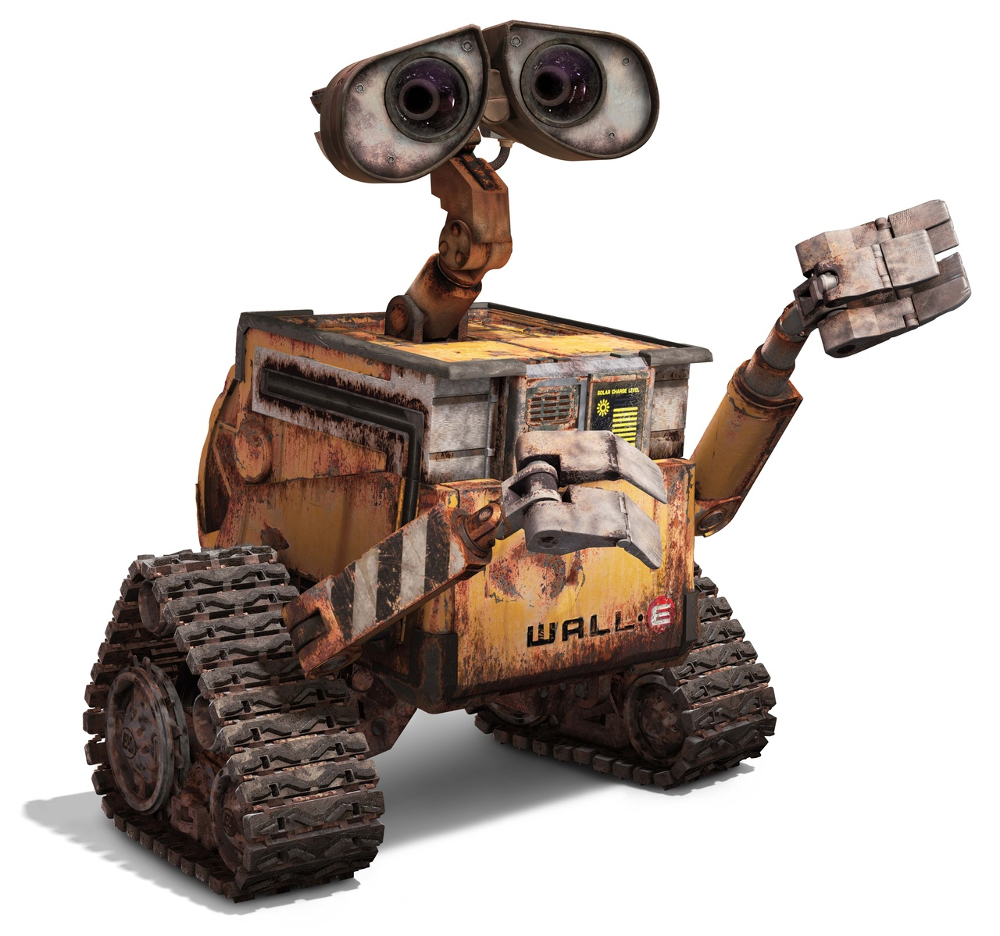
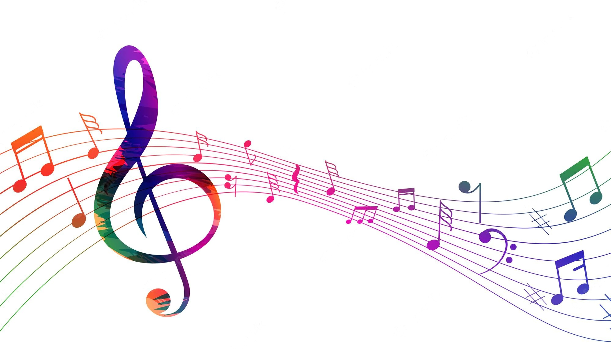

What do you think of when you think about ‘robots’? If you think they are only the stuff of space movies and science
fiction novels, then think again. Robots are the largest growing technological device in the world. They perform many
functions ranging from space exploration to entertainment. Robotics technology is increasing at a fast rate, providing us
with new technology that can assist with home chores, automobile assembly and many other tasks. Robotic technology has
changed the world around us and is continuing to impact the way we do things. Robotic technology transformation from the
past to present surrounds almost everyone in today’s society and it affects both our work and leisure activities.
Robotics is the branch of mechanical engineering, electrical engineering and computer science that deals with the
design, construction, operation, and application of robots, as well as computer systems for, their coptrol and processing.
These technologies deal with automated machines that can take’the place of a human in various kinds of work, activities,
environments and processes. Much of the research in robotics focuses not on specific industrial tasks, but on
investigations into new types of robots, alternative ways to think about or design robots, and new ways to manufacture
them.
Sounds are all around us, from birds chirping and waves lapping against a coastline to cars honking in traffic. But
sometimes sounds are put together in purposeful ways to create a specific atmosphere or to express ideas or emotions. Such
organized sounds are called music. Music is a collection of coordinated sound or sounds. Making music is the process of
putting sounds and tones in an order, often combining them to create a unified composition. People who make music
creatively organize sounds for a desired result, like a Beethoven symphony or one of Duke Ellington's jazz songs. Music is
made of sounds, vibrations, and silent moments, and it doesn't always have to be pleasant or pretty. It can be used to
convey a whole range of experiences, environments, and emotions.
Music is the sound of our soul. It is expression of man’s soul. The following paragraph mentions meaning, value and importance
of Music in our Life, in simple words for students. Music is one of the most important and powerful things in our lives. It has
the ability to affect our emotions, thoughts, and physical well-being in a variety of ways. While its impact can be felt in
every aspect of our lives, music is especially important in our personal and emotional development. Simply defined, music is an
art form consisting of sound and silence expressed in time. Music can be heard, felt, or even seen. It is incredibly diverse,
spanning all cultures and genres. There is no one right way to experience it, and everyone has their own unique connection to
it. Music has been around for centuries, and its importance has only grown over time. It is a vital part of our culture and
society, and can be found in all aspects of our lives. Apart from all, Music is an important tool for
learning and understanding new things. It can help us in a variety of subjects, from maths and science to history and
literature. It can also help us develop our creative skills and imagination. It helps us express ourselves and find our
identity. It can be a way to connect with others who have similar interests and values. It can also provide us with a sense of
belonging and community. It can help us deal with stress, pain, and sadness. It can also give us a sense of hope and optimism.
Music can inspire us to achieve great things. It can give us the motivation to work harder and reach our goals. Music is
the expression, thoughts and feelings. It has had a profound impact on every field of our life.
From blessing our souls with comfort and ease to making our environment pleasing, music has an impact everywhere.